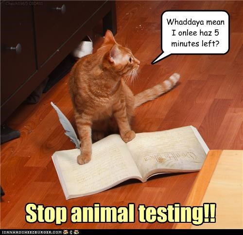

- Time Required
- 7–8 hours, including time for the exam
This module asks you to determine whether you will complete the optional final exam. If you decide to compose the final, you can use the resources in this module to prepare for your final exam
Course Due Dates and Grace Period Reminders
University policy dictates that no course activities can be due during the last three days of classes (See the Virginia Tech Faculty Handbook, 9.6.1 for more information). Additionally, this policy requires that all work should ideally be returned by the last day of classes.
In order to ensure that all work has been returned by the last day of classes (Wednesday, May 5), you must meet the following deadlines and policies:
- The grace period for all open activities ends at 11:59 PM on Monday, May 3.
- This is a firm deadline. No work other than course work will be accepted past 11:59 PM on Monday, May 3.
- No extensions or extra course work will be added to the course.
- The final exam will open on the first day of exams, at 12 midnight on Friday, May 7.
- The final exam is due on the last day of exams, by 11:59 PM on Wednesday, May 12. To allow time to check your work and submit course grades on time, I cannot give any extensions or accept late submissions. This is a firm date and policy.
- I will post an announcement when course grades have been submitted to the registrar. You can check your grades in Canvas to the course grade you have earned.
Activities for this Week
Available Points: Up to 40 points for completing the Optional Final Exam
📈 To Determine Your Current Course Grade
- Use the information in the Checking on Your Grade Announcement to determine your current grade.
- Note that your grade for the Final Exam will be set to 0 points so that your Course Grade calculates properly. I will update that number if you choose to take the final.
- Once all submissions have been checked, your Course Grade will show accurately in Canvas. Watch for an Announcement that lets you know when.
- Make your decision:
- If you are happy with your course grade, you do not need to take the final exam. You are finished with the course. Celebrate! 🎉
- If you are short of your goal, take the final exam. Taking the final exam cannot harm your grade in the course. You can only add points to your course total, never lose them.
📚 To Read to Prepare for Your Final
📝 To Write This Week
- Use the Final Exam Preparation page to gather evidence of your work in the course.
- Complete your Final Exam: Performance Review once the activity opens at 12:00 Midnight on Friday, May 7.